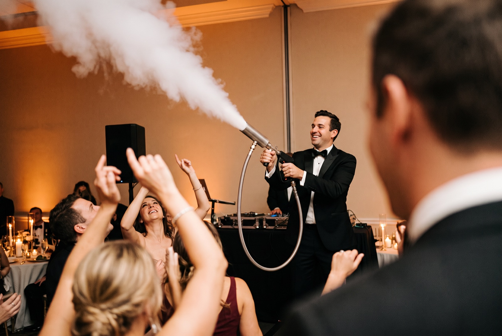

The beat drops. The floor is packed. Then two columns of white fog shoot twenty feet into the air and the whole room screams at once. That is a CO2 jet doing its job.
If you have been to a club in Miami or a big wedding reception lately, you have probably felt it. The air goes cold for a second, the fog clears a few seconds after that, and the energy on the floor is somewhere it was not a minute ago.
If you are planning a wedding, a quince, a corporate party, or a big birthday and you are wondering whether CO2 jets make sense for your night, here is how they work, where they shine, and what to ask before you book them.
What CO2 Jets Actually Do
A CO2 jet is a nozzle connected to a tank of liquid carbon dioxide. When it fires, the liquid expands into a dense plume of cold white fog. Fast, loud, and tall. The plume is gone within seconds, so there is no haze hanging in the room and nothing to clean up after.
The effect is the burst. Cold sparks are built for the slow, pretty moment. CO2 jets are built for the peak. The grand entrance when the doors open. The drop on the biggest song of the night. The second the court finishes its choreography at a quinceañera and the floor opens up.
A few things make CO2 jets work especially well at Miami events. Our rooms run warm and the fog is cold, so guests actually feel the blast hit them. The fog is just CO2, the same gas in a can of soda, so it does not trip smoke alarms the way fog machines sometimes do. And it is quick. The moment lands, the room clears, and you are ready for the next one.
What It Looks Like at Real Miami Events
The place we fire CO2 jets most is a wedding reception. The couple gets introduced, the DJ drops the entrance song, and the jets go off right as they hit the dance floor. Every phone in the room comes up. That photo ends up in the album every time.
Quinceañeras are a close second. The surprise dance is where the party flips from ceremony to celebration, and a CO2 blast at the end of it tells everyone in the room that it is time to get up. Same idea at a sweet sixteen, or at a bar mitzvah when the hora hits its peak.
Corporate is a different use. At a product launch in Brickell or on Miami Beach, the jets fire on the reveal, timed to the screen and the lights so the whole thing lands as one cue. At a holiday party or an awards night in Coral Gables, we hold them for the open dance floor and use them to push the energy up at the right moments.
Venue changes the plan. A high-ceiling ballroom at a hotel in Bal Harbour or Aventura can take a full-height blast. A lower room in Wynwood or a tented reception in Fort Lauderdale needs a lower angle or a shorter burst so the fog reads without hitting anything. We walk every room before we decide where the jets go and how high they fire.
What to Look For When You Hire
CO2 jets are not complicated, but they are not something you want someone figuring out on your night. A few questions sort it out early.
Ask whether they handle the gas themselves. The tanks are high pressure and the nozzle fires cold enough to hurt skin. The company should own the equipment, source the CO2, and have a person on site who has done this many times, not a DJ who rented a jet off a list the week before.
Ask who fires them and when. The whole effect is timing. If the jets go off a second late on the drop, the moment is gone and you do not get it back. You want the person running the music to be the person on the trigger, so the blast and the song are the same cue.
Ask about the venue. A good vendor will check ceiling height, air conditioning, and placement before the day, and will clear the effect with the venue so nobody is surprised when the first blast goes up. If a company tells you they have never had to check, that is your answer.
And ask how many shots you are getting. A tank holds a limited number of blasts, and a vendor who is vague about that number is planning to run out. You should know exactly how many moments you are buying.

How Baseline Studio Handles CO2 Jets
We started as a DJ company, and CO2 jets came in because our clients kept asking for the thing they felt in the club. So when you book CO2 jets through Baseline Studio, the person on the decks is the person on the trigger. The drop and the blast are one cue, every time.
We bring the tanks, we place the jets after walking your room, and we clear everything with the venue ahead of time. Then we plan the shots with you. The entrance. The first big song. The last song. You tell us the moments that matter and we build the firing plan around them.
A lot of our couples pair the jets with cold sparks, sparks for the first dance and CO2 once the party opens up. Both live inside our special effects package along with dancing on clouds, so it all comes from one team with one plan instead of three vendors guessing at each other's cues.
Honestly, there is nothing better than the sound a room makes when the jets go off on the right beat. We love this part, and we do not take it lightly. You enjoy your night. We will handle the rest.
Tell us your date, your venue, and the moments you want to hit, and we will tell you where the jets should go and what it will cost. No stock package, just a real plan for your night. Call us at (786) 302-6056.
Explore CO2 Jets Get a QuoteFrequently Asked Questions
Most of our Miami events land somewhere between $450 and $1,200 for CO2 jets. Two jets with a tank each, set up and fired by our team, sits near the low end. Four or more jets with extra tanks for a long night sits higher. What moves the number is how many jets you want, how many blasts you plan to fire, and whether the jets are booked on their own or as part of your DJ and production package. Booked together, they almost always come in lower.
Yes, when they are run by someone who knows the equipment. The fog is carbon dioxide, the same gas in a can of soda, and it clears in seconds. There is no fire, no heat, and nothing left on the floor. The one real hazard is the nozzle itself, which gets cold enough to hurt skin, so the jets are placed where guests cannot reach them and fired by an operator who is watching the floor. We also clear the effect with your venue before the day.
Almost never. Smoke detectors look for particles, and CO2 fog is not smoke, so standard alarms do not react to it. The exception is a venue with beam detectors across the ceiling, which can read a tall plume as an obstruction. That is one of the things we check when we walk the room, and if the venue has them we adjust the angle or the height of the blast so you still get the moment.
A standard tank gives roughly eight to twelve full blasts per jet, depending on how long each one runs. For most weddings and quinceañeras that is plenty to cover the entrance, the big songs, and the last dance. If you want the jets going all night, we bring extra tanks. Either way, we tell you exactly how many shots you have before the event so nothing runs out at the wrong moment.
They are built for different moments. Cold spark machines produce a slow fountain of sparks that lasts fifteen to thirty seconds, which is perfect for the first dance or a cake cutting. CO2 jets fire a fast, loud column of cold fog that lasts a few seconds, which is built for the drop, the entrance, or the peak of the party. Plenty of our couples use both, sparks for the romantic moment and jets once the dance floor opens.